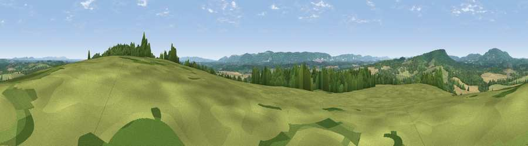

Viewpoint near Lodsworth
#20140 in England · top 23% of its area beats it · near Lodsworth · path 110 mWhere it is
The exact computed spot (SU 94575 22975). Click the marker for map links.
Public access: the nearest public right of way is about 110 m away — the final stretch may cross private land. Computed from Natural England's CRoW access layer and OpenStreetMap rights of way — not the legal definitive map. Always verify locally.
The view, rendered

A 360° render of this exact spot computed from the terrain model, tree cover and land cover — summer colours, afternoon light, calibrated against photographs of famous viewpoints. Real trees, hedges and buildings will differ in detail.
The panorama
Grey silhouette: terrain skyline in each direction (720 bearings, Earth curvature and refraction included). Dashed green: skyline with trees (+15 m) and buildings (+8 m) as obstacles. Blue strip: how far the ground is visible on each bearing.
Where the view opens
Wedge length = distance to the farthest visible ground on that bearing (vegetation-aware). Rings at 10, 25 and 50 km.
What fills the view
47% woodland · 36% grassland · 16% cropland
Angular shares of the visible panorama (visual magnitude), not map area. Landscape diversity 0.46 (0–1 Shannon).
Key numbers
More beautiful places nearby
The staircase of upgrades: each row has a higher view potential than everything closer. Driving times are estimates from straight-line distance, calibrated against real road routing — check an actual route before setting out.
| Place | Direction | Drive | Score |
|---|---|---|---|
| Viewpoint near Tillington | ENE · 1 km | ~4 min | 55.8 |
| Viewpoint near Lodsworth | WNW · 4 km | ~9 min | 59.6 |
| Viewpoint near Fernhurst | NNW · 7 km | ~14 min | 75.1 |
| Barlavington Down | S · 8 km | ~15 min | 77.3 |
| Viewpoint near Cocking | SW · 8 km | ~17 min | 77.6 |
| Viewpoint near Cocking | SW · 9 km | ~17 min | 78.3 |
| Viewpoint near Bignor | S · 10 km | ~19 min | 82.1 |
| Glatting Beacon | S · 10 km | ~20 min | 84.3 |
50.99841, -0.65363 · source: screening · position refined by local search. Computed location — check access rights before visiting.